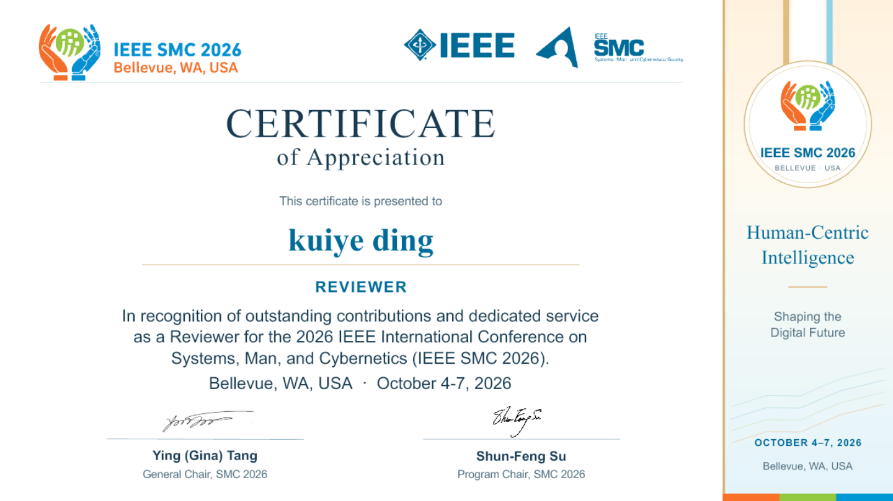

2026 – Present
Ph.D. in Computer Science
University of Technology Sydney
Supervised by Dr. Hanchen Wang. Research on time series data compression and LLMs.
RESEARCH & ACADEMIC PROFILE
I am a Ph.D. student at the University of Technology Sydney (UTS), supervised by Dr. Hanchen Wang.
Previously, I worked as a Machine Learning Engineer at the Institute of Computing Technology, Chinese Academy of Sciences (ICT, CAS). I received my B.S. degree in Cyberspace Security from the Faculty of Computer Science and Technology at Qilu University of Technology (Shandong Academy of Sciences).
FOCUS
UPDATES
SELECTED WORK
* denotes equal contribution (co-first authorship).
COMMUNITY
IEEE Transactions on Dependable and Secure Computing (TDSC)

BACKGROUND
2026 – Present
University of Technology Sydney
Supervised by Dr. Hanchen Wang. Research on time series data compression and LLMs.
2021 – 2025
Qilu University of Technology (Shandong Academy of Sciences)
Faculty of Computer Science and Technology
BACKGROUND
Oct 2024 – Dec 2025
Institute of Computing Technology, Chinese Academy of Sciences
Supervised by Jianfeng Zhan and Fanda Fan.
Oct 2023 – Sep 2024
China University of Petroleum (East China)
Supervised by Assistant Professor Xin Yang.
CONTACT
For research collaborations and academic discussions.